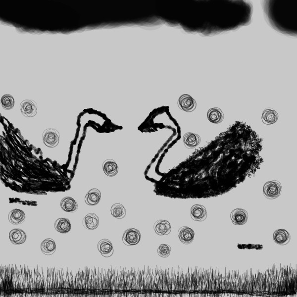

This is a project that we did in class to create different brushes. I decided to take influence from chinese art and create different brushes that would help assist in a huaniao. Huaniao translates to flower and bird painting. These brushes were made in processing using p5js.
This is the code used to make it
var img;
var img2;
var initials = 'rl';
var choice = '1';
var screenbg = 250;
var lastscreenshot = 61;
function preload() {
img = loadImage('https://veryprofessional3d.github.io/images/cat3.jpg');
img2 = loadImage('https://veryprofessional3d.github.io/images/cat2.jpg');
}
function setup() {
createCanvas(600, 600);
background(200)
}
function draw() {
if (keyIsPressed) {
if (key == 'x' || key == 'X' || key == 'p' || key == 'P') {
clear_print(); // only clear or save
} else {
choice = key; // switch brush
}
}
if (mouseIsPressed) {
newkeyChoice(choice);
}
}
function newkeyChoice(toolChoice) {
if (toolChoice == '1') {
strokeWeight(random(2, 8));
stroke(0, random(40, 100));
line(mouseX, mouseY, pmouseX, pmouseY);
} else if (toolChoice == '2') {
for (let i = 0; i < 8; i++) {
let offset = random(-3, 3);
stroke(0, random(20, 100));
strokeWeight(random(0.5, 3));
line(mouseX + offset, mouseY + offset, pmouseX + offset, pmouseY + offset);
}
} else if (toolChoice == '3') {
noStroke();
for (let i = 0; i < 30; i++) {
let r = random(5);
let x = mouseX + random(-10, 10);
let y = mouseY + random(-10, 10);
fill(0, random(30, 120));
ellipse(x, y, r, r);
}
} else if (toolChoice == '4') {
noStroke();
for (let i = 0; i < 20; i++) {
let x = mouseX + random(-15, 15);
let y = mouseY + random(-15, 15);
fill(0, random(10, 30));
ellipse(x, y, random(10, 30));
}
} else if (toolChoice == '5') {
strokeWeight(1);
for (let i = 0; i < 6; i++) {
let x = mouseX + random(-10, 10);
let y = mouseY + random(-10, 10);
let len = random(5, 20);
stroke(0, random(60, 120));
line(x, y, x + random(-3, 3), y - len);
}
} else if (toolChoice == '6') {
noStroke();
for (let i = 0; i < 15; i++) {
let x = mouseX + random(-30, 30);
let y = mouseY + random(-20, 20);
fill(0, random(5, 20));
ellipse(x, y, random(40, 80));
}
} else if (toolChoice == '7') {
strokeWeight(random(2, 4));
stroke(0, random(60, 120));
for (let i = 0; i < 5; i++) {
let ox = random(-4, 4);
let oy = random(-4, 4);
line(pmouseX + ox, pmouseY + oy, mouseX + ox, mouseY + oy);
}
} else if (toolChoice == '8') {
strokeWeight(random(0.3, 1));
stroke(0, random(100, 200));
let segments = int(random(3, 6));
let prevX = pmouseX;
let prevY = pmouseY;
for (let i = 0; i < segments; i++) {
let nx = lerp(prevX, mouseX, i / segments) + random(-5, 5);
let ny = lerp(prevY, mouseY, i / segments) + random(-5, 5);
line(prevX, prevY, nx, ny);
prevX = nx;
prevY = ny;
}
} else if (toolChoice == '9') {
let a = atan2(mouseY - pmouseY, mouseX - pmouseX);
let w = map(sin(a * 3), -1, 1, 1, 8);
strokeWeight(w);
stroke(0, random(80, 150));
line(pmouseX, pmouseY, mouseX, mouseY);
} else if (toolChoice == '0') {
noFill();
strokeWeight(random(0.5, 2));
for (let i = 0; i < 3; i++) {
stroke(0, random(40, 100));
ellipse(mouseX + random(-5, 5), mouseY + random(-5, 5), random(10, 30));
}
}
}
function testbox(r, g, b) {
fill(r, g, b);
rect(mouseX - 50, mouseY - 50, 100, 100);
}
function clear_print() {
if (key == 'x' || key == 'X') {
background(200)
} else if (key == 'p' || key == 'P') {
saveme();
}
}
function saveme() {
filename = initials + day() + hour() + minute() + second();
if (second() != lastscreenshot) {
saveCanvas(filename, 'jpg');
key = "";
}
lastscreenshot = second();